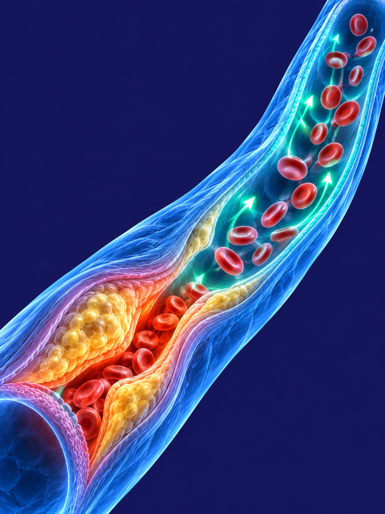

A semaglutida ficou conhecida pelo emagrecimento, mas um grande estudo mostrou algo além da balança: em um grupo específico de pessoas, ela reduziu infarto, AVC e morte por causa cardiovascular. Aqui você entende quem eram essas pessoas, o que o estudo encontrou e por que isso acontece.
Por que o excesso de peso pesa também no coração
O tecido gorduroso não é um depósito parado. Principalmente a gordura que se acumula na região da barriga, entre os órgãos, funciona como um tecido ativo: libera substâncias que mantêm o corpo em um estado de inflamação crônica de baixo grau, silenciosa, que não dá sintoma.
Essa inflamação participa diretamente da aterosclerose — a formação de placas de gordura na parede das artérias. Quando uma dessas placas se rompe e um coágulo fecha o vaso, o resultado é um infarto (no coração) ou um AVC (no cérebro). Por isso, em quem já tem doença cardiovascular, a pergunta que a ciência queria responder era: tratar a obesidade com semaglutida muda esse desfecho?
O que o estudo fez — e o que encontrou
O SELECT acompanhou 17.604 adultos com 45 anos ou mais, com sobrepeso ou obesidade (IMC a partir de 27), que já tinham doença cardiovascular — infarto ou AVC prévio, ou doença arterial periférica sintomática — e que não tinham diabetes. Metade recebeu semaglutida semanal e metade recebeu placebo, sem que médicos e pacientes soubessem quem recebia o quê, por cerca de 40 meses em média [1].
O resultado: o conjunto de morte por causa cardiovascular, infarto não fatal e AVC não fatal aconteceu em 6,5% de quem usou semaglutida e em 8,0% de quem usou placebo — uma redução relativa de 20% no risco [1].

Não é só porque a pessoa emagrece
A explicação mais intuitiva seria: perdeu peso, protegeu o coração. Mas uma análise do próprio SELECT mostrou que o benefício apareceu independentemente do peso inicial e de quanto peso a pessoa perdeu. A redução da circunferência da cintura explicou só cerca de um terço do efeito [2].
Ou seja: a maior parte da proteção parece vir de outros caminhos, que agem na própria parede dos vasos. Esses mecanismos ainda estão sendo estudados, mas alguns já foram medidos dentro do estudo — veja abaixo.
O que mudou no corpo de quem participou
Três mudanças medidas no SELECT ajudam a entender de onde vem o benefício:
Menos inflamação
A proteína C reativa ultrassensível — um marcador da inflamação que participa da formação das placas — caiu cerca de 38% a mais com a semaglutida do que com o placebo, de forma rápida e sustentada [3].
Pressão arterial mais baixa
A pressão sistólica caiu em média 3,8 mmHg no grupo da semaglutida, contra 0,5 mmHg no grupo placebo. Parece pouco, mas, mantido por anos, é um alívio real para a parede das artérias [1].
Menos gordura abdominal
O peso caiu em média 9,4% e a cintura diminuiu. A gordura da região abdominal é a mais ligada à inflamação — e a redução da cintura foi a medida corporal que acompanhou a queda do risco [1][2].
Esse resultado não é para qualquer pessoa
O benefício foi demonstrado em um perfil bem definido: sobrepeso ou obesidade + doença cardiovascular já estabelecida. O estudo não avaliou pessoas sem doença cardiovascular, nem quem busca apenas perder alguns quilos — para esses casos, esse resultado não pode ser simplesmente transportado.
Também vale lembrar: a semaglutida foi somada ao tratamento que essas pessoas já faziam (controle da pressão, do colesterol, antiagregantes) — ela não substitui nenhum deles. E, como todo medicamento, tem efeitos adversos: no estudo, mais pessoas interromperam o uso no grupo da semaglutida, principalmente por sintomas gastrointestinais [1].
Quer entender como isso se aplica ao seu caso?
A consulta é online e a avaliação é individual, com investigação e plano feitos para você.
Agendar consultaReferências
- Lincoff AM, et al. Semaglutide and Cardiovascular Outcomes in Obesity without Diabetes (SELECT). N Engl J Med. 2023;389(24):2221-2232 — DOI 10.1056/NEJMoa2307563
- Deanfield J, et al. Semaglutide and cardiovascular outcomes by baseline and changes in adiposity measurements: a prespecified analysis of the SELECT trial. Lancet. 2025;406:2257-2268 — DOI 10.1016/S0140-6736(25)01375-3
- Plutzky J, et al. Effect of Semaglutide on the Inflammatory Biomarker High-Sensitivity CRP in Patients With Established Cardiovascular Disease and Overweight or Obesity in SELECT: A Prespecified Secondary Analysis. Circulation. 2026;154:976-991 — DOI 10.1161/CIRCULATIONAHA.125.074482
Este material é educativo e não substitui a consulta médica. Ele não indica, prescreve nem ajusta medicação, nem promove marca ou produto específico: cada caso precisa de avaliação individual.